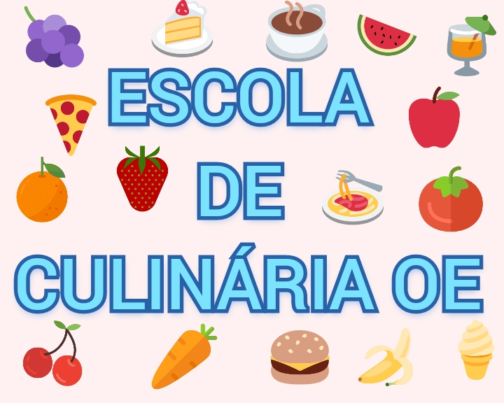
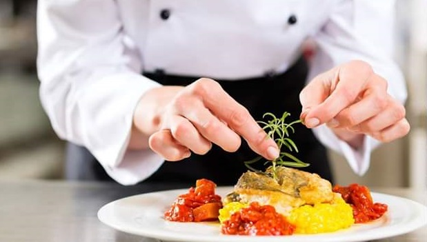

<!DOCTYPE html>
<html long="pt-pt"></html>
<head>
    <meta charset="UTF-8">
    <meta http-equiv="X-UA-Compatible" content="IE=edge">
    <meta name="viewport" content="width=device-width, initial-scale=1.0">
    <title>document</title>
</head>
<body>
    <header>
        <h1>Escola de culinária OE</h1>
    </header>
    <ol> 
        <li><a href="home.html">Home</a></li>
        <li><a href="receita_de_lasanha_bolonhesa_ao_molho_branco.html">Receita de lasanha bolonhesa ao molho branco</a></li>
        <li><a href="receita_de_panqueca.html">Receita de Panqueca</a></li>
        <li><a href="receita_strogonoff_de_frango.html">Receita Strogonoff de frango</a></li>
        <li><a href="cadastro_alunos.html">Cadrasto do aluno</a></li>
        <li><a href="Alunos_cadastrados.html">Alunos cadastrados</a></li>
    </ol>

    <nav>
         
    </nav>
    <br>
    <nav>
         
    </nav>
    <br>
     <nav>
        
    </nav>

    <h2>Uma escola de culinária é uma instituição dedicada à educação na arte e ciência  

    da culinária e preparação de alimentos.Existem muitos tipos diferentes de escolas  
    
    de culinária em todo o mundo, algumas voltadas para o treinamento de chefs 
    
     profissionais, outras voltadas para entusiastas amadores, algumas sendo uma 
    
     mistura dos dois. As escolas de culinária amadoras estão frequentemente 
    
     interligadas com o turismo culinário em muitos países.Os programas podem variar  
    
    de meio dia a vários anos. Alguns programas conferem um grau acadêmico ou 
    
     uma qualificação profissional reconhecida, enquanto outros não. Muitos programas 
    
     incluem experiência prática na cozinha de um restaurante vinculado à escola ou um 
    
     período de experiência de trabalho em um restaurante de propriedade privada.</h2>

    <footer>
        <h2>Endereço: R. Visc. de Nacar, 337 - Centro, Ponta Grossa - PR, 84010-620</h2>
        <h2>Contato:(42) 99972-6566</h2>
    </footer>
</body>
</html>
